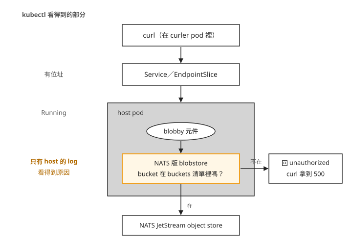
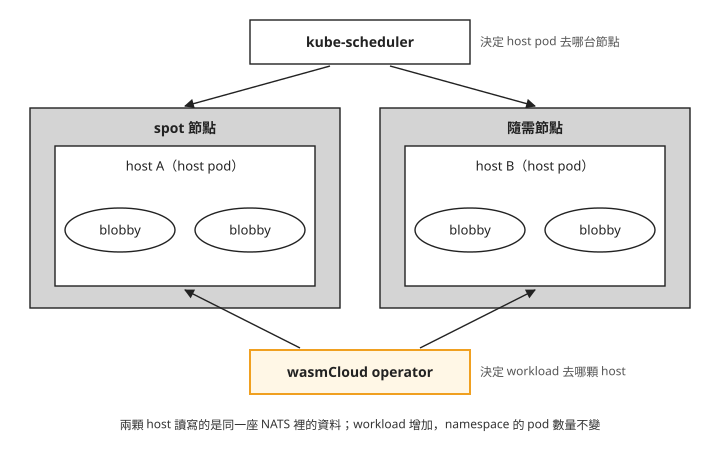
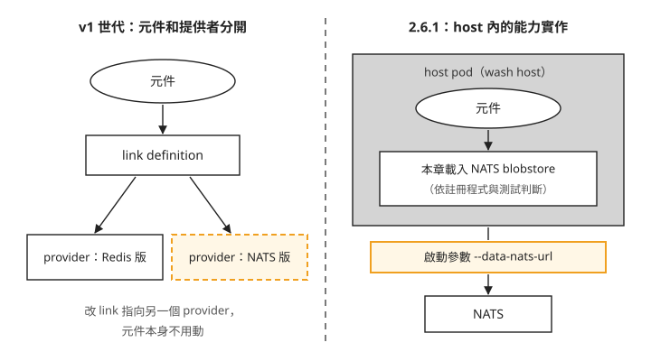

Day 3: wasmCloud 分散式模型——能力設定、跨節點排程與 spot 節點¶

Day 2 已經讓 HTTP 請求送到 wasmCloud 元件。這一章改用官方的檔案服務範例 blobby，讓元件接收請求後讀寫檔案。元件執行在 host 裡，儲存能力也由 host 提供；本章的 host 使用 NATS 服務中的物件儲存，讓不同 host 上的元件能讀取同一份資料。後半段會從一台節點上的 host 寫入，再從另一台節點上的 host 讀回。
能呼叫儲存介面，還不代表能存取其中的資料。bucket 是儲存物件的分組，host 會依元件設定的 buckets 清單判斷是否允許存取；blobby 使用的分組名稱是 blobby。沒有設定清單時，host 會拒絕它的讀寫請求。這一章先確認版本提供的設定入口，再測試授權，最後把 host 分散到兩台節點。讀完後，你能區分能力設定、host 的 Kubernetes 排程和元件的 wasmCloud 排程，也能判斷一個「設定成功」是否真的改變行為。
開始之前¶
沿用 Day 2 的 wasmCloud 2.6.1、wasmcloud namespace 和叢集內可執行 curl 的 curler Pod。以下 Service 網址要從叢集內呼叫；本機的終端機不能直接解析 .svc.cluster.local。後半段會新增 spot1 節點池，完成演練後再刪除它。
原始碼節錄都對應 wasmCloud 2.6.1；帶 … 的 console 區塊是觀察結果節錄，不能整段當成 shell 指令執行。需要操作的地方會另列完整指令。
步驟 1: 先確認版本提供哪種能力設定¶
舊版教學中的 capability provider 是獨立的能力實作，例如把儲存操作接到 Redis 或 NATS；link definition 則記錄元件使用哪個 provider。先查目前安裝的版本有沒有對應資源：
$ kubectl api-resources --api-group=runtime.wasmcloud.dev
NAME SHORTNAMES KIND
artifacts Artifact
hosts Host
workloaddeployments WorkloadDeployment
workloadreplicasets WorkloadReplicaSet
workloads ww Workload
$ kubectl get crd -o yaml | grep -icE "\blink\b|capabilityprovider|\bprovider\b"
0
這裡有 Workload、Host 等物件，沒有獨立的 provider 或 link。本章 2.6.1 的 Kubernetes 整合使用 Day 2 用過的 hostInterfaces 宣告能力，不能直接套用 v1 的 link 操作。查看其中的 config：
$ kubectl explain workloaddeployment.spec.template.spec.hostInterfaces.config
FIELD: config <map[string]string>
DESCRIPTION:
<empty>
map[string]string 只要求鍵和值都是字串，沒有列出允許的鍵。API 接受 backend: in-memory，只代表這個欄位的型別正確，還要看 host 的實作是否讀取它。
步驟 2: 讓 blobby 寫入檔案¶
blobby 透過 wasi:blobstore 介面讀寫資料。下面是介面宣告的節錄，只用來看元件要求哪些能力，不需要建立或編譯檔案。WIT 是描述 Wasm 元件介面的語言；這裡的 world 列出元件與外部的介面，import 表示它需要宿主提供 wasi:blobstore：
建立 blobby.yaml。這份設定先放入 backend: in-memory，用來觀察設定被接受、實際後端卻沒有改變的情況：
cat > blobby.yaml <<'EOF'
apiVersion: runtime.wasmcloud.dev/v1alpha1
kind: WorkloadDeployment
metadata: { name: blobby, namespace: wasmcloud }
spec:
replicas: 1
template:
spec:
hostSelector: { hostgroup: default }
kubernetes: { service: { name: blobby } }
components:
- name: blobby
image: ghcr.io/wasmcloud/components/blobby:0.6.0
hostInterfaces:
- namespace: wasi
package: http
interfaces: [incoming-handler]
config: { host: blobby.wasmcloud.svc.cluster.local } # Day 2 mine 4's fix
- namespace: wasi
package: blobstore
interfaces: [blobstore]
version: 0.2.0-draft
config: { backend: in-memory }
EOF
還要建立 Service，讓 operator 能替它維護 EndpointSlice。這裡沒有 selector，位址由 wasmCloud operator 管理：
cat > blobby-service.yaml <<'YAML'
apiVersion: v1
kind: Service
metadata:
name: blobby
namespace: wasmcloud
spec:
type: ClusterIP
ports:
- name: http
port: 80
protocol: TCP
YAML
kubectl apply -f blobby-service.yaml
kubectl apply -f blobby.yaml
先查 WorkloadDeployment 與 EndpointSlice。要看到目前設定產生的 Workload 已就緒，EndpointSlice 的位址也對應到目前 host，才能從 curler 發出請求。get 只列出查詢當下的狀態；更新尚未完成時，重查狀態再繼續：
kubectl -n wasmcloud get workloaddeployment blobby
kubectl -n wasmcloud get endpointslice -l kubernetes.io/service-name=blobby
kubectl -n wasmcloud exec curler -- curl -sS -D- -X POST --data-binary 'day3' http://blobby.wasmcloud.svc.cluster.local/day3.txt
對應的請求結果如下。HTTP 已經有回應，但寫入失敗：
$ curl -sS -D- -X POST --data-binary 'day3' http://blobby.wasmcloud.svc.cluster.local/day3.txt
HTTP/1.1 500 Internal Server Error
content-length: 0
host 日誌留下了拒絕原因：
ERROR handle_http_request{http.method=POST http.uri=/day3.txt}:
failed to invoke component err=ErrorCode::InternalError(Some("unauthorized"))
在 Day 2 取得的 wasmCloud v2.6.1 原始碼目錄搜尋 unauthorized，命中的是 NATS 版 blobstore，而不是 manifest 中指定的 in-memory：
$ grep -rn '"unauthorized"' crates/
crates/wash-runtime/src/plugin/wasi_blobstore/nats.rs:163
crates/wash-runtime/src/plugin/wasi_blobstore/nats.rs:203
crates/wash-runtime/src/plugin/wasi_blobstore/nats.rs:233
crates/wash-runtime/src/plugin/wasi_blobstore/nats.rs:254
以下是同一份程式碼的授權判斷。先看 buckets 沒設時得到的空清單，再看儲存分組的名稱是否在清單裡。程式中的 container_name 指 blobstore 的資料容器，與 Kubernetes 容器無關：
let buckets = match interface.config.get("buckets") {
Some(buckets) => buckets.split(',').map(|s| s.to_string()).collect(),
None => vec![], // 沒設就是空的
};
…
if data.buckets.contains(container_name) { return Some(…) } // allow
if is_write && data.read_only { return None }
None // 其餘一律拒絕
這次設定只有 backend: in-memory，沒有授權 blobby 使用任何 bucket，因此請求被拒絕。下一步加入 buckets: blobby，允許它存取名為 blobby 的分組。
下圖把請求經過的位置畫出來。Kubernetes 能確認 Service 和 host Pod 存在；是否允許讀寫 bucket，則在 host 裡決定。

所以遇到這個 500，先看 host 日誌，再查能力設定。Day 2 的虛擬主機比對失敗則回 404，兩者不能只憑「Pod 都是 Running」就判為服務正常。
步驟 3: 只改授權，觀察行為¶
把 blobby.yaml 裡 blobstore 的 config: { backend: in-memory } 改成 config: { buckets: blobby }，重新套用。image、HTTP 設定與 Service 都保持不變。確認新 Workload 已就緒、舊版本已移除，且 EndpointSlice 指向目前 host 後，建立一次 /day3.txt，並讀回內容：
kubectl apply -f blobby.yaml
kubectl -n wasmcloud exec curler -- curl -sS -D- -X POST --data-binary 'day3-nats-jetstream' http://blobby.wasmcloud.svc.cluster.local/day3.txt
kubectl -n wasmcloud exec curler -- curl -sS -D- http://blobby.wasmcloud.svc.cluster.local/day3.txt
接著把 bucket 名稱改為 some-other-bucket，套用後重試；最後再改回 blobby。每次都先確認新設定的 Workload 已就緒、舊版本已移除，再執行下面兩個請求。讀取的是剛才建立的 /day3.txt，寫入測試則使用另一個 /probe.txt，避免重新寫入掩蓋了舊資料是否還在：
kubectl -n wasmcloud exec curler -- curl -sS -D- http://blobby.wasmcloud.svc.cluster.local/day3.txt
kubectl -n wasmcloud exec curler -- curl -sS -D- -X POST --data-binary 'probe' http://blobby.wasmcloud.svc.cluster.local/probe.txt
下面的四種狀態包含步驟 2 的未授權結果。最後恢復授權時，要先讀到舊檔的原始內容，才能判斷撤權沒有刪除資料。以下是實測摘要，PUT 是原紀錄對寫入測試的標記；重播腳本實際使用 HTTP POST：
=== 狀態 1:buckets 未設
image = ghcr.io/wasmcloud/components/blobby:0.6.0
config = {"backend":"in-memory"}
PUT /probe.txt -> 500 GET /day3.txt -> 500 body=
=== 狀態 2:buckets: blobby
image = ghcr.io/wasmcloud/components/blobby:0.6.0
config = {"buckets":"blobby"}
PUT /probe.txt -> 201 GET /day3.txt -> 200 body=day3-nats-jetstream
=== 狀態 3:buckets: some-other-bucket
image = ghcr.io/wasmcloud/components/blobby:0.6.0
config = {"buckets":"some-other-bucket"}
PUT /probe.txt -> 500 GET /day3.txt -> 500 body=
=== 狀態 4:改回 buckets: blobby
image = ghcr.io/wasmcloud/components/blobby:0.6.0
config = {"buckets":"blobby"}
PUT /probe.txt -> 201 GET /day3.txt -> 200 body=day3-nats-jetstream
映像相同，授權名稱改變後，寫入與讀取也跟著失敗或恢復。最後一個狀態還讀得到先前的內容，表示撤銷授權沒有刪除資料。資料存放在 NATS 的 JetStream object store，也就是它提供的物件儲存，而不是 blobby 元件的記憶體。
這還不能證明 NATS 自己消失後資料也能保留。內建 NATS 的磁碟使用 emptyDir，本章只測 host 與授權改變，沒有測 NATS Pod 被刪除後的恢復。
步驟 4: 把 host 放到不同節點¶
新增節點之前，要先區分「有空間放 Pod」與「Pod 會分散」兩件事。spot 節點可能被雲端供應商回收，適合用來觀察節點消失時的恢復。節點上的 taint 會排除不符合條件的 Pod；Pod 要設定對應的 toleration 才能排上去，但這不保證一定排到該節點。以下建立帶有 spot taint 的節點池；把資源群組與叢集名稱換成自己的值：
az aks nodepool add -g <resource-group> --cluster-name <cluster> -n spot1 \
--node-count 1 --node-vm-size Standard_D2as_v5 \
--priority Spot --eviction-policy Delete --spot-max-price -1 \
--node-taints kubernetes.azure.com/scalesetpriority=spot:NoSchedule
新增後，既有 host Pod 仍在原節點：
$ kubectl -n wasmcloud get pods -o custom-columns='POD:.metadata.name,NODE:.spec.nodeName'
hostgroup-default-… <system-node>
hostgroup-default-… <system-node>
hostgroup-default-… <system-node>
nats-… <system-node>
runtime-operator-… <system-node>
節點的 CPU request 分布是：
既有 Pod 不會因為加入節點就自動遷移；新 Pod 還必須容忍 spot taint 才能排進去。先把 host 擴到 4 顆，觀察新增 Pod 的排程結果：
Warning FailedScheduling default-scheduler
0/2 nodes are available: 1 Insufficient cpu, 1 node(s) had untolerated taint(s).
一台節點沒有足夠 CPU，另一台有 Pod 尚未容忍的 taint。這裡刻意使用 kubectl scale 重現觀察，稍後會看到它與 Helm 管理同一欄位時的衝突。
chart 沒有提供排程欄位時¶
2.6.1 的 chart values 沒有提供這些排程欄位，因此這裡直接修改 host Deployment。完整查詢放在延伸閱讀。
把下面內容存成 toleration-patch.json，它允許 host 排到帶有 spot taint 的節點：
{
"spec": {
"template": {
"spec": {
"tolerations": [
{
"key": "kubernetes.azure.com/scalesetpriority",
"operator": "Equal",
"value": "spot",
"effect": "NoSchedule"
}
]
}
}
}
}
套用 patch 後，等新的 host Pod 都 Ready、舊 Pod 已終止，再查 NODE 欄位。以下是更新完成後的分布：
$ kubectl -n wasmcloud patch deploy/hostgroup-default --type=strategic \
--patch-file toleration-patch.json
$ kubectl -n wasmcloud get pods -o custom-columns='POD:.metadata.name,NODE:.spec.nodeName'
hostgroup-default-… <spot-node>
hostgroup-default-… <spot-node>
hostgroup-default-… <spot-node>
hostgroup-default-… <spot-node>
四顆 host 都在 spot 節點。toleration 只允許 Pod 使用該節點，沒有要求它們分散；這次滾動更新時，新增 Pod 可以使用的空間主要在 spot 節點。
若要兩台節點各有一顆 host，還要加上 topologySpreadConstraints。它限制節點之間符合標籤的 Pod 數量差距；這裡 maxSkew: 1 允許差一顆。把下面內容存成 spread-patch.json：
{
"spec": {
"template": {
"spec": {
"topologySpreadConstraints": [
{
"maxSkew": 1,
"topologyKey": "kubernetes.io/hostname",
"whenUnsatisfiable": "DoNotSchedule",
"labelSelector": {
"matchLabels": {
"wasmcloud.com/hostgroup": "default",
"wasmcloud.com/name": "hostgroup"
}
}
}
]
}
}
}
}
kubectl -n wasmcloud scale deploy/hostgroup-default --replicas=2
kubectl -n wasmcloud patch deploy/hostgroup-default --type=strategic --patch-file spread-patch.json
同樣先確認新的兩顆 host Pod 都 Ready、舊 Pod 已終止，再查節點分布。這組測試更新完成後，兩顆 host 分別位於兩台節點：
這兩個 patch 都是 chart values 之外的設定，應與部署設定一起保存，之後才能重建相同的排程行為。
步驟 5: 元件由誰分配到 host¶
host Pod 已經分散，現在把 blobby 的元件副本從 1 個增加為 4 個：
kubectl -n wasmcloud patch workloaddeployment blobby --type=merge -p '{"spec":{"replicas":4}}'
kubectl -n wasmcloud get workload -o custom-columns='WORKLOAD:.metadata.name,HOSTID:.status.hostId'
kubectl get hosts.runtime.wasmcloud.dev -A -o custom-columns='HOST:.metadata.name,HOSTID:.hostId,PODIP:.hostname,WORKLOADS:.status.workloadCount'
等四個新設定的 blobby Workload 都 Ready、舊版本已移除，且 EndpointSlice 指到目前 host，再比較分布。觀察重點是元件與 Pod 數量的變化，不是你的 Pod 總數是否恰好等於 5。測試用 Pod 的數量也會影響總數：
=== 擴之前:命名空間 pod 總數
5
--- workload 落在哪些 host
blobby-66c4b8bd46-64d67f789f host-A
blobby-66c4b8bd46-65b7d69b5c host-A
blobby-66c4b8bd46-d675945bc host-B
blobby-66c4b8bd46-ddd6545c9 host-B
--- host 物件
longing-trail-7203 10.244.1.93 WORKLOADS 2 ← 在 spot 節點
spiritual-death-0162 10.244.0.117 WORKLOADS 2 ← 在隨需節點
--- 擴完之後:命名空間 pod 總數
5
元件增加了，host Pod 沒有跟著一對一增加。Kubernetes scheduler 決定 host Pod 在哪台節點，wasmCloud 則決定元件在哪顆 host。下圖分開畫出這兩個決定。

圖上的四個 blobby 不是四顆 Kubernetes Pod。查元件分布時要看 Workload 與 Host 物件，不能只查 kubectl get pods。Host.status 提供了工作負載數等資訊，但本章沒有從原始碼確認排程器實際採用哪些欄位，不據此推論它的演算法。
直接呼叫某顆 host 時，還要保留 Host: blobby.wasmcloud.svc.cluster.local 標頭，才會符合 Day 2 的虛擬主機設定。先查出兩顆 host 的 Pod IP 與所在節點：
kubectl -n wasmcloud get pod -l wasmcloud.com/name=hostgroup -o custom-columns='HOSTPOD:.metadata.name,IP:.status.podIP,NODE:.spec.nodeName'
把 <spot-host-ip> 換成位於 spot1 節點池的 host Pod IP，<system-host-ip> 換成另一台節點上的 host Pod IP。由 spot host 寫入 /gateb.txt，再從 system host 讀取：
kubectl -n wasmcloud exec curler -- curl -sS -m 10 -D- -X POST -H 'Host: blobby.wasmcloud.svc.cluster.local' -H 'Content-Type: text/plain' --data-binary 'written-via-spot-node-host' http://<spot-host-ip>/gateb.txt
kubectl -n wasmcloud exec curler -- curl -sS -m 10 -D- -H 'Host: blobby.wasmcloud.svc.cluster.local' http://<system-host-ip>/gateb.txt
以下是跨 host 讀寫的實測摘要：
GET /day3.txt @ 10.244.1.93 (spot) -> 200 body=day3-nats-jetstream
GET /day3.txt @ 10.244.0.117 (system) -> 200 body=day3-nats-jetstream
PUT /gateb.txt @ spot host -> 201
GET /gateb.txt @ system host -> 200 body=written-via-spot-node-host
兩邊讀到同一筆資料，符合兩顆 host 使用相同 NATS 儲存的設定。這個測試沒有模擬 NATS 故障。
步驟 6: Helm 更新為什麼與手動擴縮衝突¶
前面用 kubectl scale 改過 host Deployment。使用本課的 Helm 4.2.2 與同一版 chart 更新時，server-side apply 回報欄位衝突：
helm upgrade wasmcloud oci://ghcr.io/wasmcloud/charts/runtime-operator --version 2.6.1 -n wasmcloud --reuse-values
Error: UPGRADE FAILED: conflict occurred while applying object wasmcloud/hostgroup-default
Apply failed with 1 conflict:
conflict with "kubectl" with subresource "scale" using apps/v1: .spec.replicas
server-side apply 會記錄哪些管理者在管理哪些欄位，這個管理者稱為 field manager。錯誤訊息已指出衝突的是 .spec.replicas，因為 kubectl scale 與 Helm 都在管理它。
在確認 chart 中的 replicas 就是你要保留的值之後，本課用 --force-conflicts 將衝突欄位交回 Helm：
helm upgrade wasmcloud oci://ghcr.io/wasmcloud/charts/runtime-operator --version 2.6.1 -n wasmcloud --reuse-values --force-conflicts
實測中，replicas 回到 chart 的 3，新增的 host 沒有立刻分到既有元件：
$ kubectl get hosts.runtime.wasmcloud.dev -A
incompetent-birth-5131 10.244.1.183 WL <none> ← 新來的,空的
longing-trail-7203 10.244.1.93 WL 2
spiritual-death-0162 10.244.0.117 WL 3
這次觀察沒有出現自動重新平衡，不能把增加 host 當成既有 workload 一定會重新分散的保證。後續擴縮應從 Helm values 的 runtime.hostGroups[].replicas 管理，避免反覆讓兩個工具修改同一欄位。
另外兩個 patch 欄位仍保留，因為 chart 沒有宣告它們。這是本次 Helm 版本與 chart 更新的結果，不代表任何 chart 升級都會保留外部修改；升級前仍要檢查新範本是否開始管理這些欄位。
步驟 7: 刪除 spot 節點池後確認恢復¶
完成跨節點測試後，刪掉本章建立的 spot1 節點池。執行前確認該節點池只承載這次演練的工作負載：
刪除後，用 kubectl get node -o wide 確認 spot 節點已移除，剩餘節點為 Ready，再確認下列條件：
kubectl -n wasmcloud get pods -o wide顯示 host Pod 已在剩餘節點上執行，NATS 與curler也維持 Running。kubectl get hosts.runtime.wasmcloud.dev -A顯示 Host 物件的 Ready 為 True；kubectl -n wasmcloud get workloaddeployment顯示 blobby 的 replicas 為 4、Ready 為 True。kubectl -n wasmcloud get endpointslice -l kubernetes.io/service-name=blobby顯示的位址對應剩餘節點上的 host，不再包含已移除節點上的 host 位址。
接著從 curler 呼叫 Service。下方摘要中的 $ curl 省略了叢集內執行方式；完整寫法是 kubectl -n wasmcloud exec curler -- curl -sS -m 10 -D- http://blobby.wasmcloud.svc.cluster.local/gateb.txt。這是依驗證腳本的 exec curler -- curl 方式補全；修正後的寫法本課沒有實跑。要同時收到 HTTP 200 與 written-via-spot-node-host，才能確認 Service 已能讀回先前從 spot host 寫入的內容。
以下保留原測試的刪除與恢復摘要：
$ az aks nodepool delete …
$ kubectl -n wasmcloud get workloaddeployment
blobby 4 True
hello-world 1 True
$ curl http://blobby.wasmcloud.svc.cluster.local/gateb.txt
200 body=written-via-spot-node-host ← 從已經不存在的節點上寫進去的那一筆
host Pod 由 Deployment 補回，元件重新分配到可用 host；先前寫入的資料也仍能讀取。NATS 留在另一台節點上，所以這裡驗證的是 host 所在節點被移除後的恢復，並未驗證儲存服務同時故障。
版本限制¶
read_only 無法阻擋已授權 bucket 的寫入¶
2.6.1 的這段授權程式先檢查 bucket allow-list，命中後直接放行，後面的 read_only 判斷不會阻擋已授權 bucket 的寫入。以下是補充驗證中設定 buckets: blobby 與 read_only: "true" 的結果，供判斷版本限制，不列為本章操作步驟：
HTTP 201 表示寫入成功，GET 的回應則顯示剛才寫入的內容已能讀回。因此這個版本不能依賴 read_only: "true" 提供唯讀保護。這與拼錯設定鍵不同：程式有讀取這個鍵，但判斷順序讓它沒有產生預期效果。
疑難排解¶
能力設定套用成功，行為卻沒有改變¶
config 是字串 map，API 不會逐一驗證設定鍵的意義。實測加入 backend: filesystem 與 root: /tmp/blobby 後仍使用 NATS。應查看對應版本 plugin 讀取的鍵，並用實際讀寫確認；本章有效的授權鍵是 buckets。
Workload 就緒，檔案寫入仍回 500¶
先查 host 日誌。如果是 unauthorized，檢查 buckets 是否包含元件要使用的名稱。步驟 2、3 示範了從拒絕到重新授權的過程。若是 404，則先回到 Day 2 的虛擬主機比對。
手動擴縮後，Helm 更新回報 replicas 衝突¶
步驟 6 的衝突發生在 field manager 管理同一欄位。--force 不適用於這次的 server-side apply；--take-ownership 處理的是 Helm 的資源歸屬，沒有解決這個欄位衝突。先確認要採用的 replicas 值，再使用該 Helm 版本支援的 --force-conflicts。失敗的更新也會留在 release history，確認狀態時要看最後一次是否成功。
補上 toleration 後，host 全排到 spot 節點¶
toleration 只解決能不能排入節點，分散需求要另外設定。步驟 4 用 topologySpreadConstraints 限制分布；不要只加 toleration 就以為已經分散。
憑證 WARN 之後，公開元件仍成功啟動¶
WARN …:resolve_credentials{registry=ghcr.io}:
failed to retrieve docker credentials error=docker credential retrieval error: Unable to read config
INFO Starting workload ← 下一行,拉取成功了
這次是 host 沒讀到 Docker 憑證設定，接著以匿名方式成功取得公開元件。要連同後續的 Starting workload 與 Workload 狀態判斷；如果使用私有 registry，不能因為這次公開映像成功就忽略憑證錯誤。
想一想¶
backend: filesystem與buckets: blobby都能套用成功，為什麼只有後者改變測試結果？- 把 blobby 副本從 1 增加到 4，Pod 數量不變。你應該查哪種物件，才能知道各元件在哪裡執行？
- 刪除 spot 節點後還能讀到檔案，是否足以證明 NATS Pod 消失後也不會丟資料？
小結¶
wasmCloud 把元件的能力與執行位置放在 host 模型裡管理。查錯時要分清楚 Kubernetes 是否成功部署 host、wasmCloud 是否成功執行元件，以及 host 是否授權它使用特定資源。擴充節點則還要分開處理 host 的排程與元件的分配，最後以實際讀寫確認恢復範圍。
延伸閱讀¶
為什麼原始碼有多個後端，設定卻不生效¶
2.6.1 的原始碼包含這些實作：
crates/wash-runtime/src/plugin/wasi_blobstore/{in_memory,filesystem,nats}.rs
crates/wash-runtime/src/plugin/wasi_keyvalue/{in_memory,filesystem,nats,redis}.rs
crates/wash-runtime/src/plugin/multiplex.rs
multiplex.rs 有使用 config.backend 選後端的邏輯。然而 Kubernetes 裡啟動的是 wash host，它的註冊程式如下：
// crates/wash/src/cli/host.rs(v2.6.1)
.with_plugin(Arc::new(plugin::wasi_blobstore::NatsBlobstore::new(&data_nats_client)))?
.with_plugin(Arc::new(plugin::wasmcloud_messaging::NatsMessaging::new(…)))?
.with_plugin(Arc::new(plugin::wasi_keyvalue::NatsKeyValue::new(&data_nats_client)))?
…
#[cfg(feature = "wasm_component_model_implements")]
{
cluster_host_builder = cluster_host_builder.with_multiplexed_plugins()?;
}
一般路徑註冊的是 NATS 版。下方的 #[cfg(feature = ...)] 是 Rust 的編譯開關，只有啟用該 feature 才會加入多後端的程式。另一種擴充入口 hostPlugins 也有自己的編譯條件，chart 的註解寫著：
# Requires a wash image built with the `host-component-plugins` feature
# (not enabled in release images yet); a host handed a plugin it cannot
# build fails to start.
這兩個 feature 是不同的入口，不能只看其中一個就判定另一個也已啟用。本章沒有直接讀取 release 映像的編譯旗標；能確認的是，本章的測試改動 backend 沒有切換實際的 NATS 後端。
從 host 的啟動參數，可以看到資料用的 NATS 端點：
$ kubectl -n wasmcloud get deploy hostgroup-default -o jsonpath='{…args}'
host
--host-group=default
--scheduler-nats-url=nats://nats.wasmcloud.svc.cluster.local:4222
--data-nats-url=nats://nats.wasmcloud.svc.cluster.local:4222 ← 提供者的端點在這裡
--oci-cache-dir=/oci-cache
--http-addr=0.0.0.0:80
runtime.hostGroups[].dataNatsUrl 是 host group 的設定。若要指向另一個 NATS，修改的位置在 host group，不是元件的 link 物件。本章沒有實測第二個 host group 搭配第二座 NATS，因此先不把它當成已驗證的切換程序。
下圖對照兩種設定方式。先看左邊獨立的 provider，再看右邊 host 啟動時選用的 NATS 連線。

圖右的 NATS 連線由 host 啟動參數決定；步驟 3 修改的 buckets 則控制元件能存取哪些儲存分組。
查詢 chart 的排程欄位¶
以下查詢比較 chart 的 values 與已產生的 manifest，確認是否提供 toleration 與分散排程等欄位：
$ helm show values oci://ghcr.io/wasmcloud/charts/runtime-operator --version 2.6.1 | wc -l
412
$ helm show values oci://ghcr.io/wasmcloud/charts/runtime-operator --version 2.6.1 \
| grep -cE "toleration|affinity|nodeSelector|topologySpread|priorityClass"
0
$ helm get manifest wasmcloud -n wasmcloud | wc -l
924
$ helm get manifest wasmcloud -n wasmcloud | grep -cE "toleration|affinity|nodeSelector|topologySpread|priorityClass"
0
412 行 values 與 924 行 manifest 都有內容，對指定排程欄位的搜尋才有意義。如果取資料的指令已失敗，grep -c 對空輸入也可能得到 0，不能把它解讀成「不存在」。
相關文件¶
想再深入，可以從這幾份開始：
- Kubernetes Server-Side Apply：說明 field manager 與欄位衝突，對應本章 Helm 更新時的 replicas 問題。
- wasmCloud 的 blobby 範例：查看檔案服務如何使用 blobstore；比對本章時請切到所用版本。
- wasmCloud 的 runtime-operator chart：核對 host group 能設定的欄位，以及 plugin 的啟用條件。
下一步¶
Day 4 改走 WasmEdge 與 runwasi，直接追蹤 RuntimeClass、containerd 設定和 shim。你會看到不採用 wasmCloud host 模型時，哪些工作需要由節點管理者完成。
wasmCloud 標誌為 CNCF（Linux Foundation）官方資產，此處作社群教學用途。